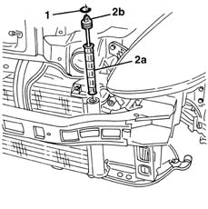

5040A44 air conditioner dehydrating filter/accumulator - r+r
- Path
- Procedures > 50 AUXILIARY UNITS > 5040 AIR CONDITIONING CASING AND COMPONENTS > 5040A air conditioner coolant circuit > 5040A44 air conditioner dehydrating filter/accumulator - r+r
- Kind
- repair procedure (removal / refitting; the operation number is the code)
- Applies to
- all engines; all production periods
- Interactive page
- https://sloeber94.github.io/elrnDB-lYpsln/en/#/2429308
Applies to: all engines; all production periods
Applies to: all engines; all production periods
 Removing
Removing
 Refitting
RefittingPlace the vehicle on a lift.
Drain the coolant ( 0010T84 coolant for air conditioning system dehydrate and recharge ).
1. Release the retaining ring.
2. Extract the drier filter cartridge (2a), via the opening (2b).

Applies to: all engines; all production periods
Refitting
RemovingCheck that the drier filter cartridge is not damaged.
Fit the drier filter cartridge.
Fit the seal.
Repressurize using coolant fluid ( 0010T84 coolant for air conditioning system dehydrate and recharge ).